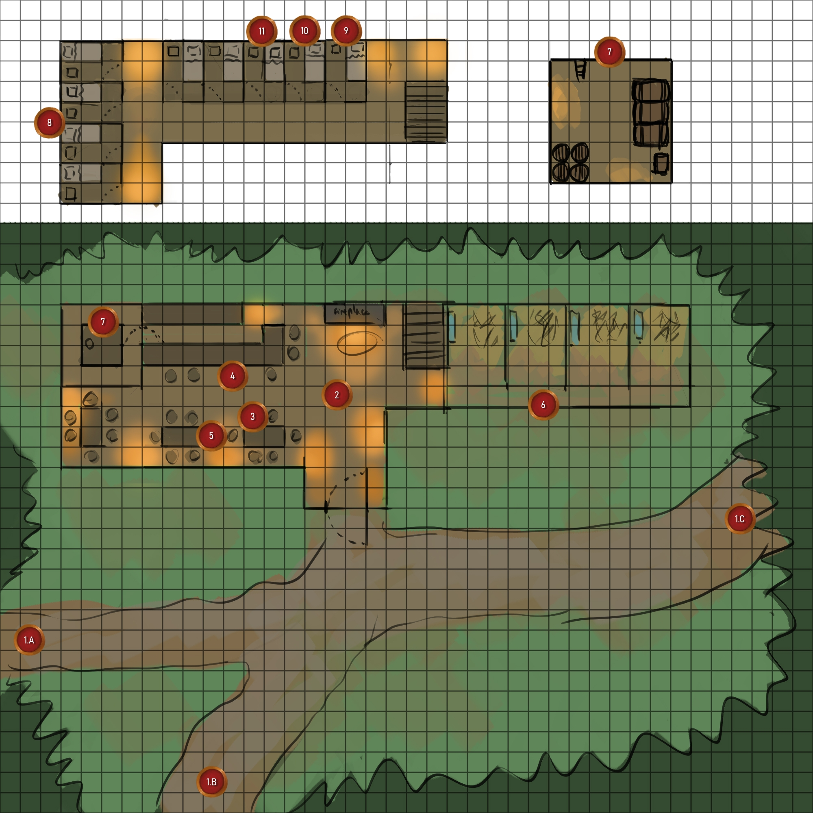
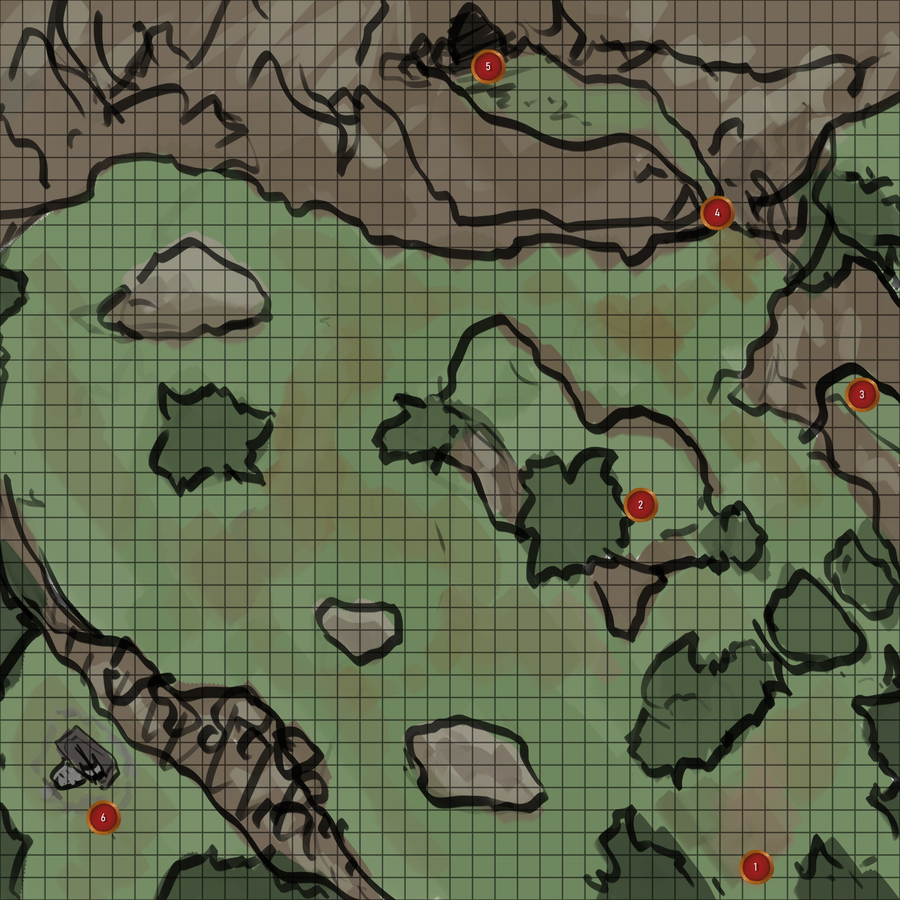
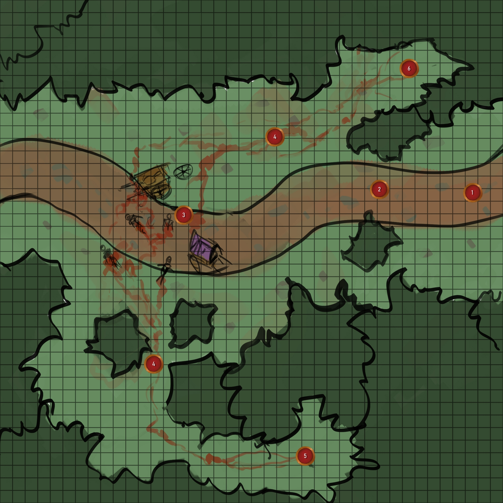

Rulebook
World Lore
Tale of the Fifth Age
Adventures
Kobold Cave
Sunrise Inn
Rulebook
World Lore
Tale of the Fifth Age
Adventures
Kobold Cave
Sunrise Inn
Character Sheet Changelog

 Rulebook
World Lore
Tale of the Fifth Age
Adventures
Kobold Cave
Sunrise Inn
Rulebook
World Lore
Tale of the Fifth Age
Adventures
Kobold Cave
Sunrise Inn


The lush green Edlan woods are located in the western part of the kingdom of Legara, nearing the borders of Teylida. Relatively newly colonized, the woods are still very densly covered and the main road has only had the bearing of a few generations of karthians upon its cobbled stone. The main inhabited village is that of Attenbur, first raised about one-hundred and twenty years ago, whose population consists purely of karthians. Other notably known attractions of the woodland are that of the tall cliffs to the north and the ever shrouded waters of Mirrowmere Lake that passes Lionstone Bridge. As populations grow however, and with the recent battles with wilder Tildran clans, the kingdom has taken note of Edlan Woods and built Fort Davlin to protect the village from the north-western ridges as well as a guarded gate for the main road.
The Sunrise Inn is nice enough, its exterior stone upkept and with the glow of a roaring fire coming through the wooden barred windows. A thatched roof upheld by beams of solid wood holds the rain at bay, and a large stable is similarly covered to the right of the building. Smoke rises from the stone chimney and the noise of a few patrons can be heard dining on this late night from within. -- Unknown to the player's knowledge, there is a powerful illusion spell placed upon the area, keeping the decayed inn a vision of delight until the next sunlight.

The Sunrise Inn is the first thing that the players'll see, arriving from either point A,B or C. Each player should
roll a die to see who arrives first at the inn (or at the same time, if a tie is rolled). The time alloted between
each player can be determined by the Game Master, but a rough estimate is to allow the player to settle within the
inn and speak with the innkeeper.
Note : Illusiory Veil : Should a character with magical aptitude attempt to detect magic, a spell of might 6 has been cast over
the inn from the arcane sphere and the sub-sphere of illusion. There are also spells of might 5 and 4
of tiredness and calling respectively, as to gather crowds to the inn and make them fall asleep. Player characters
who enter the inn or its surrounding will quickly find themselves tired or sleepy for the night.
A large, jolly, grinning and friendly man with a booming voice. He welcomes you gladly to his house of rest, The
Sunrise Inn. Upon inspecting him, there seems to be no malice nor judgement in his eyes, even if you aren't from
the area.
Ordo is an physical illusion, his corpse held in a ritual circle elsewhere to keep adventurers and other
humanoids within the inn until the slaving bandits are able to capture them sleeping. He will always be positive,
friendly and charming. He will deftly avoid answering personal questions about himself or the inn.
Ordo is an important character for the GM to roleplay as he is the one that has to get all the players
to stick together for the upcoming adventures (other than the inn's disappearance in the morning).
Note : Servings : The food and drink Ordo serves is also an illusion and will taste magnificent
but never actually fill the player up. They will wake hungry.
Green-tattered clothing and ragged mud-covered linen show this man to be a huntsman, most probably
local. Though he seems tired, he will give a nod and raise his half-filled tankard at you.
Devon is a local hunter and if spoken to is able to answer basic questions of directions to Attenbur,
Gateway pass and Fort Davlin. He will note that he thought that this inn had been abandoned, but is
glad to see it renwed and under new ownership.
A jolly looking fellow. He shuffles a deck of cards with ease, its contents never leaving his hands. A
practiced winning smile greets you as he catches your glance.
Arder is a travelling gambler escaping his debts he has arrived in the area of Edlan Woods
seeking a treasure by the name of the "Jewel of the Dreamer". He will not tell this to
the player directly, only if he loses at gambling against them multiple times in a row. This
is rather unlikely however, as he cheats. (Spot check of 5 to notice his cheating.)
A pretty face doesn't seem to mind your look, as she returns a homely smile. It does seem, however, that
she looks you over with a calculating gaze, sizing you up.
Ellia is a self-taught scholar on matters of Daelden history. Although her actual knowledge is rather
shallow, her passion and interest in such things are much greater. If an adventurer speaks of previous
dangerous adventures or seems strong, she will ask if they are interested in a venture to the south
to explore a ruined tower. (Though she knows almost nothing of it, having only noticed it
the day of.)
While the stables are currently empty, should a non-humanoid player character (such as a harpy, siren or grolnar) arrive in need of aid, Ordo will keep them in the stables so as to not scare the other visitors. The door between the inn and the stables does have a window however, and so the character can peek in and will also be visible to characters within the inn that look through.
Should the players venture there, the cellar of the inn seems normal, having little beyond the usual barrels of mead and fresh foods. Ordo will try to keep them out of his kitchen though, as he jests of keeping his recipes a secret. -- Once again, the cellar is kept clean by the same illusion magicks that are keeping the inn.
The rooms on the second floor at the far left are empty and can be used by players at a single copper piece for the night. A meal is another copper piece on top.
Devon's room is devoid of most things other than his hunting gear, which consists of an elm longbow, twenty copper arrows and a medium fitted leather armour.
Arden's room holds nothing more than a leaded die and a chipped deck for cheating at
cards upon the bedstand as well as a small journal.
Important Item : Arden's Note :
A small journal. Written in Karthan
The many first entries in this journal are nonsense and simple,
but it changes quickly to a more focused methodology since the mention of a "Jewel of the Dreamer".
As you shuffle through the pages, you find that the worth of this pearl is apparently within
the thousands of gold pieces.
The most recent entry reads : "I've tracked it down to Edlan woods. Five years...
Five whole years of searching coming to an end. And the coingrubbers club said that Arden doesn't have luck.
Hah! I'll show them. There should be some sort of cliffs to the northwest of this Inn and then,
as I got from that soothsayer, it should be between twin spikes of some sorts."
Ellia's room holds a journal with not quite accurate descriptions of Daelden culture (accurate
only to those who do not know of it). One thing of note would be a paper that sticks out ever
so slightly.
Important Item : Ellia's Note : A torn note from a diary of sorts. It has writing on it in Karthan.
"Though it pains me to sell it, I doubt I'll find a better buyer... Still, onto better news,
I'd climbed a birch tree on the path (nuts had been stashed in its lower branches and the view was really pretty),
and spotted a ruined tower about a week's journey to the South-East. Thank goodness for my love of high places,
for it seems to have led me to finding perhaps more stuff to sell. It is rather odd that such a large tower
isn't marked on my map... I wonder how many ancient relics I can find."
A bit more flowery language of hopes and dreams of a better future are written below in neat penmanship.
When the players wake, what they'll first notice is how uncomfortable they are. The cot they are sleeping on is hard, the mattress not even thick enough to cover the wooden slats beneath. Upon opening their eyes, they'll see that the once beautifully kept inn is now a rotted mess. Cobwebs and moss cover the ceiling and dust motes are visible in the rays of sunshine that filter upon the open room. Where there once was furniture gleaming with care and polish, there is now a mess of planks that is falling apart.

The player characters wake at the same spot on the map as where they went to sleep. Other than the inn's visual change nothing else has moved or transformed.
The rooms of Ellia, Arden and Devon are all unlocked and with the door open. None of their things have yet been taken or are missing. The items within are exactly the same as the previous map. (See points 9. 10. and 11.)
All the tables and chairs remain usable, albeit cracked and broken. No matter how much they may call,
no-one is around and Ordo (Innkeeper) is missing. Food and drink do not exist and what casks remain
are empited and dried.
A. SPOT CHECK (4) :
Players who do a spot check will note
that any area which most people would use (chairs, tables, bar, stairs, fireplace) have been hastily repaired to a usable state
by someone or something.
The cellar is nearly the same as it was during the previous night, only with dried blood staining the dirt ground. The large
casks hold a little bit of aged ale, but are mostly dried out.
A. SPOT CHECK (4) :
Grooves in the dirt have long faded, but still note that someone had been dragged to the lower right corner of the cellar.
There, the players can find a very faded bark-paper with terrible writing in charcoal which almost crumbles under any handling.
The writing is messy and scribbled, it is obvious that this was jotted down really hastily and only makes sense phonetically.
The blood that covers the rest of this letter tells of the innkeeper's fate.
"He's gone mad.'E said e'd found a tower of sorts. Dunno what was there, but it made 'im ..."
Item of Note : Stash of Blue Ale : An old and rare vintage, this stage of old Blue Ale is worth quite
a good thirty silver pieces to a discerning merchant or innkeeper.
When the players have all left the inn and searched around for a short while, you may initiate the arrival of three human karthian
thugs from the eastern path. The thugs are loudly discussing
amongst themselves as they travel towards the inn, and so inititate a listen check (A.) with the player characters. Upon arrival on the map,
if the player character's aren't hiding the thugs will be surprised, and two of them will reach for weapons, except for their "leader", who
will first try to find out the reason why the player characters are there.
The thugs will do their best to question the players without mentioning their own purpose. This is to take the adventurers
that arrive and sleep at the inn as prisoners to either be sold as slaves or used by their leaders for an unknown purpose. Should the player characters
say that they slept at the inn, the thugs will see if they are outmatched based on the visual look of the players. If not, they will attack,
if so, they will try to flee and warn their leaders at the cave to the east. (DARK HOVEL MAP)
If the player characters lie about not having slept at the inn, the thugs will do their best to hurry them along, pretending that they've travelled
for a while and they'll take a break within the shade of the broken inn.
If beaten but not killed, the thugs will quickly beg for their life in exchange for what little information they know and what they
were doing. They will give exact locations to their leader's cave and will note that they have no idea what their leader does.
A. LISTEN CHECK (4) :
At a partial success Player characters can hear an argument in the distance, but can't tell the direction. If they get a success they
hear the direction (from the east), and with a critical success, they know there are three people.
The small village of Attenbur has stayed the same for the past few generations, growing only by a few citizens every year. At approximately one-hundred villagers, Attenbur hosts a beautifully stone carved fountain as its centerpoint, with a small church, town hall, inn, blacksmith, hunter's lodge and barracks. A few stalls are also present, where the farmers, wandering peddlers and hunters sell their daily wares. GM - (None of the villagers seem to know of a tower, and only a few seem to know of the old abandoned sunrise inn.)

The whole village of Attenbur is surrounded by an old wooden pallisade. At the northern and southern ends of the village are closable "doors" of wooden planks, reinforced by iron platings and hinges. Each gate is manned by two village guards. They are able to direct the players to the different areas if asked. Should a player character be not of the common adventuring species, the guards will be much more wary.
Alfan Irden : Alfan is the mayor of Attenbur. He seems tired and has probably seen better days. His clothes, though no doubt once regal,
are now patched and tattered. He will nonetheless greet visitors warmly and openly.
- Alfan will ask the players if they've seen or heard of anything from Fort Davlin to the north, and will also impress the
sudden increase in dangerous banditry happening throughout the woods should the party look capable or warrior-like. If
asked about the tower or the sunrise inn, he will direct them to see Father Willard at the chapel and check the records there.
He will hand the players wanted posters.
Wanted Posters : The wanted posters are for the leader of the bandits Desther Band-Ear, and his two lieutenants
Gwennen Narina and Arken Eldon.
Gwennen Narina : If the players saved Gwennen on the road from the orcs, she will do her best to hide her face while
in town. If handed in by the players she will curse them, but will not fight back, and will instead bargain to not be hanged
and simply brought to jail by giving the mayor the location of the bandit's other places. She will eventually escape after
three days should the players hope to gain further information from her.
Father Willard : This cheerful, smiling priest seems to welcome any and all to the sanctuary of Eonna. Though his smile will vanish
for a second should a creature of inhuman origin arrive at his doorstep, it is very much temporary.
- Father Willard will be willing to give the blessing of Eonna to any who pass by, and may even attempt to convert
non-karthians to her ways. Should the players have been told to visit him for the old records he will assist common adventuring
races without much though. If the player character isn't from that listing, he will find only the records on the inn, but not the
tower.
Records : The Sunrise Inn : Almost every record say that the inn was built nearly 100 years ago, and was quickly abandoned as
the village of Attenbur grew with more attention. It's innkeeper, Ordo, stayed with the inn until his disappearance, whereupon
the inn had no caretaker and was left as an abandoned, and possibly haunted.
Records : The Tower : There are only two records of the Tower's sighting, and each of them are likened to speakings of mad
men. Both seem to say that the tower resided at the south-eastern parts of the Edlan Woods, and that from within came whisperings
of dark promises.
Item of Note : Diadem of Eonna : Hidden in plain sight is the Diadem of Eonna, upon the main statue of her divine grace.
This magical item gives its wearer +1 to their Wisdom, Presence and Will.
Elanna Froy : Though seemingly timid and shy when spoken to, once at her work, she escapes into a world of her own amongst
the blazing heat of the forge and the repeated hammering of metal.
She sells most basic weaponry and armour of up to Bronze
quality. She has crafted a few Iron items as well, which the Game Master may choose to cater to the party.
Delden Orothar : The lodge master, huntsman and lumberyard surveyor. He has a loud voice and a boisterous laugh to match his large
frame. He seems to wield a two-handed axe with ease.
While there are not many things that can be found at the hunter's lodge, Delden will inform the players that he's
heard wolf howlings from the north and therefore believes that the bandits haven't hidding to the far north.
Maurin : A relaxed elder man, he will offer a nod to visitors of Attenbur, as well as a warm meal and a drink to quench their long travels. If asked for details of the happenings around town, he will shrug and say that he has no care for rumours and gossip.
Derrik Griff : The main shopkeeper of Attenbur, this man's facial expression is one of confidence. Over-confidence even. He lighly
flicks a coin into the air, watching it turn with interest while a lop-sided grin rests on his face. - Derrik will sell basic goods
from the Adventuring Gear equipment list, except skeleton keys, healing poultices and balms. (See World Lore - Equipment).
Beana Shaen : Should the player characters have encountered and saved Beana Shaen, she will have set up a shop selling basic
cares, bandages and medicine poultices. (See World Lore - Equipment).
The barracks of Attenbur are not well kept. Dusty and poorly manned, it is obvious that Attenbur would rely much upon a militia if it were ever to be attacked. Other than the four guards at the gates, the barracks holds an additional four, ready to be called upon.
The remaining villages of Attenbur are of karthian descent, living their lives peacefully through the day by day. Should the game master wish, they may have the villagers react to the party, depending on what the composition is, or perhaps even demanding the mayor and guards to remove non-humans from the surrounding out of fear. This reaction would be changed should the player characters be known to have removed bandits or having stopped the goblin and orc forces to the north.
A collection of ragged tents are well hidden within the leafy foliage of the woodlands. A soft glow of flame dimly lights the environment, the only tell that there is life nearby. From within the small outcropping, the grumblings of dissatisfied men sitting by the campfire can be heard. It would seem that whomever has set up camp ahead is not in small number.

The players may decide from which direction they wish to approach as soon as they spot the campfire lit in the distance of
the woods.
Gwennen Narina : If the players saved Gwennen and are still travelling with her, she will offer to lead
them in from the front, and to pass them off as new associates to their cause.
In each of these four trees are bandit scouts, keeping a lookout for any enemies or guards.
SPOT CHECK (4) : The player may notice the bandits in the trees with a success, or simply something moving in
the trees with a partial success.
Gwennen Narina : Gwennen will tell of and point to the usual spots that the scouts are hidden.
The inner camp of the bandits, a small campfire lights the nearby stitched tents and fur sleeping pelts. A few roughly
hewn logs are shaped into basic tables and chairs. One can count five bandits, not including the four scouts in the
trees, lounging and talking of future plans, from thievery to a few darker tales of pillage.
Gwennen Narina : Gwennen will caution the player characters to mingle with the bandits, as she fears
of them being discovered as adventurers.
A singular larger tent is erected to the northern most part of the camp, hosting the leader of these bandits,
the wanted criminal Desther Band-Ear. If the players approach the tent or ask the other bandits should they be
on speaking terms, they will let the players know that he is busy. An argument can be heard within, but it is
in whispers. (See listen check).
Desther Band-Ear : A heavy scar runs across this permanently scowled man, his brooding expression
deepeend by this once wound. As he turns his head, one notices that the scar keeps going up, ending by an ear
that is missing it's upper half. -- If the players are on speaking terms with the bandits, Desther will exit his
tent and ask Gwennen and the players that the time has come. A few nights from now, they'll assault and burn the town
to the ground so to please the wizard in grey. If the players speak against him, he will tell his underlings
to kill the weak-hearted.
LISTEN CHECK (7) : A critical success will let the players know that the unknown wizard in grey
is dismissing Desther and has found better allies to the north. A success will let the players know that Desther is
speaking in anger against someone much more calm, almost as if one side is being betrayed. A partial success will
let the player know that there are two people within.
Gwennen Narina : Should Desther be angered and turn against the players, Gwennen will call upon the
bandits to ask them if they truly wish to follow this lunatic of a leader, upon which three of the bandits nearby
will aid the player characters instead of attacking them.
Note : Possible Valuables : A list is found in the tent with possible valuable or special items.
- Object : Diadem of Eonna - Location : Attenbur's Chapel.
- Object : The golden Lion's-Eye - Location : Lionstone Bridge (Circled)
- Object : Stash of Blue Ale - Location : Woods - That Old Inn
- Object : The Black Cherry - Location : Woods. Somewhere.
- Object(s) : Statue's Eyes - Location : Some old ruins up north. Near the large oak pond. (Taken, need to process.)
- Object : King Thralen's Axe - Location : Somewhere high up on a cliffside.
Note : Band-Ear's Note : A note in the tent. Suprisingly well written with a flowing hand. "The ruins to the North-East...
There's something about that tree. I rubbed my eyes the first time I went as I swore I saw a womanly figure drift
across the horizon, only to see her vanish into the trunk of the tree... However, no matter how much I've returned,
I've not seen it again. I'll go back soon, there's gotta be something special about that place. It's the same
feeling I get from the never ending mists over the lake."
Item of Note : Statue's Eyes : Two large and no doubt very expensive emeralds are cut into circular shapes.
They do not seem to have any additional details, but a slight tingle will run through the arm when a player character
picks one up. (For the Dryad at the Ancient Ruins).
The northern cliffs hold well to their description. Tall jagged rocks shoot up into the sky, covering the sight of any traveller within. Trees are sparse, and only the occasional bush and leaf is seen growing from the brown stone and dirt. Whatever else that grows is grass and herb, diminishing the further north one looks as the cliffs lead high up into mountainsides.

As the player characters weave their way up the mountainside, note to tell them that cliffs are labyrinthian and tall, weaving and never showing what was around the next corner, including the entryway to the map.
A wolf pack of four holds this shallow cave, and will emerge to guard their home and litter should the players approach too close, but will remain weary and growling if distance is kept. Characters that can speak to beasts may find a hint for the second trap from the wolves, as they say that the rock burns with great pain any who touch them.
The trap is set in the wall of the left cliff, where many small holes host loaded iron crossbow bolts that are
fired as players step upon a pressure plate on the ground between the cliffs.
SPOT CHECK (8) : The player characters may notice that the rock wall is not quite
right, and that it hosts rocks that are unnaturally formed.
DISABLE DEVICE (5) : If the trap is triggered or seen, a player character may disable
the trap by reaching within one of the firing holes.
Twenty stones of different heights, with symbols carved into them surround a larger looming
stone at the back end of the small round cliffside.
While the symbols are not a language per say, they have been made into a somewhat complex equation that is solvable within itself.
The stones' trap tells which stone to activate in which order.
INTELLIGENCE REQUIRED (8) : Player characters with an intelligence score of 8 or more can
solve the equation and figure out which stone to activate. Otherwise, the the DM may choose to activate the trap
for a lesser intellect character.
DISPEL : SPELL LEVEL 3 : The trap is magical of nature and can be seen with a sense magic spell
or effect. It coats itself in flames when touched, if the order touched is wrong, burning the nearby target for
5 points of lethal damage, with an attack value of 10 against dodge.
If the stones are touched in the right order, the stone gate leading to the black crystal is lowered.
A large part of the cliff is actually a well disguised gate with a lowering mechanism. Should the second trap be
solved, the gate lowers and gives access to the black crystal.
SPOT CHECK (10) : The gate is really well disguised and appears to simply be part of the cliffside,
but characters with incredible sight may find minor flaws that give it away.
A singular ornate pillar of darkened crystal is sitting upon the tallest rock of the cliffside. It is laid within
a large silver pedestal entrenched in the ground and covered in symbols. Should the players thouch it,
its facets will split open to reveal a black pearl with red mist hovering in the midst.
Smoking red-black pearl | WILL REQUIRED (8) : "A perfectly round pearl that seems to have
a moving cloud of black and red smoke within. A shiver courses through you when you pick it up".
Each point of Will below 8 will make a player take a point of insanity (-1 to all dice roll results and they
will take 1 point of lethal damage). If the will of the player is 5 or less, they will be attracted to
the pearl and want to hold it, even though it is deadly to them. The lethal damage is reapplied every night
of rest. -- This item can be used to summon the Tower's Shadow at the Tower of Kalder.
The trickling of water can be heard in the northern-most part of the cave and a horrid stench is smelt in vaguely the same direction, the telltale sign of an old corpse. Although the entryway is flooded in daylight, the inner section of the cave is quickly fades into a shroud of darkness.

The darkened hovel is, as it is implied, dark. Characters without dark vision will need a source of light to see. The cave is somewhat tall, enough for a small encampment.
A deer's carcasse is found at the end of the main cave, it's flesh has been carved up. If inspected, the cuts are not of natural claws or teeth, and show signs of humanoid weaponry.
The sound of water trickling down from the far end of the hovel can be heard. If the player characters follow the source of the sound, they'll end up looking up. If there is a source of light, or they have dark vision, they'll see that a ladder was kept on the side of the rock and leads to a small entrance.
A collection of small tents, a few bandits are camped around a low burning campfire. They're obviously trying
to keep a low profile, keeping the shadows cast to a minimum and their voices low.
Arken Eldon : Second in command of the bandits, (alongside Gwennen Narina), Arken is a roughly
shaven male karthian. He has grim eyes that follow all nearby movements. When the players near, he'll pull out
a throwing blade and expertly balance it on his fingertips, ready to throw, but will also give a winning grin,
ready to bargain.
Firstly, he'll try to tempt the players with coin and bargain them to join him.
If that doesn't work, he'll try to buy them out instead and point them to his boss (Desther Band-ear), but betray them as they
walk away.
Arken holds on him the key for the hidden pathway (5).
The back of this second cave holds a hidden door. Should the players near it with torchligh, they shouldn't have any issue looking
for a doorway. Its held closed with a small lock, which can be forced open by a character of strength 8.
SPOT CHECK (3) : The doorway is poorly disguised and attempts to appear as part of the rock face.
A larger cave, the area is well lit with candles and torches. A bloody display is open to see, with bodies having been tossed
against the rock walls. Two tables are set up, recently dead bodies upon them with vicious wounds and sliced flesh having
been harvested and dumped into buckets filled with blood. An upright rack is on the opposite side, with a corpse strung up.
Bodies of Inn members : The bodies upon the tables are that of Devon, Ellia and/or Arden, if the players
weren't able to stay up at the Inn. Otherwise it's random bodies.
Body on the Rack : Ordo Botler : The body of Ordo Botler, the innkeeper of the Sunrise Inn, is on the
upright rack. It's surrounded by mystical symbols, and it seems to have been covered in blood many times over. While
his shape is still somewhat equivalent to what it was at the inn, his skin seems decades past its due date.
A glass orb is at the far end of the cave. What the players don't know is that it is a magical artefact, enchanted
with a sight spell. The orb is used by the mage in grey to watch over the blood sacrifices and to keep the body of
Ordo Botler for the illusion of the inn in good enough shape so as to keep up the appearance of living.
If the players take the eye, the mage in grey will be able to keep tabs on them and won't be
able to be snuck upon in Kalder's Tower.
Nestled within the cliffs, and just at the edge of the mountain-ranges, this particular path seems to have been tread before, although there are rough and messy visible attempts to cover this fact. Like the cliffs to the east of this place, the rocks jut upwards and the green foliage is less dense and with fewer trees.

The upper cliffsides are accessed through a last cluster of trees that hide the characters from the more
open area just ahead.
SPOT CHECK (4) : If the characters note it, they spot at least one of the orc
scouts that are upon the towering pillars. (See 2/3)
Protecting their cave from unwanted travelers and at the same time waiting for an unsuspecting meal, two orc scouts armed with crude bows and a fistful of arrows watch from above. If the players don't stay hidden in the shadows of the cliffs or entryway trees, they'll be spotted and shot at.
The rocky cliffs are home to many small crevices and crags, but none have yet been large enough
to hold a passage for creatures of small or greater size. This rock cropping however, hides
a passage towards a large cave entryway.
SPOT CHECK (3) : If the check is successful, the characters note the entryway.
A cave lies ahead, its entrance littered with skeletons and torn and raked flesh, some still fresh. A few ragged uniforms of human guards cover the area, the remains of the victims of whatever lives in the caves.
A raised stone grave lies high above in the cliffs, looking down upon the area. Etched upon it in Runic is
"KING THRALEN STONEAXE - Carver of Halls and Foes." A battleaxe lies upon it, still sharp
after who knows how many years.
King Thralen's Axe : A Darksteel Masterwork Two-handed Axe.
The outdoor light is quickly lost as one progresses within the tunnels. A stuffed atmosphere permeates the small cave, the area barely large enough to fit a few adventurers side by side. After a while, one finally notices a small flicker of orange light dancing upon the rocks. It would seem the upcoming turn holds a waking fire ahead, and low toned guttural grunts.

The light quickly fades as one ventures deeper into the mountainside. Soon, characters without a form of darkvision or a source of light will be blind.
A stone cliff wall hides a small cavernous entrance near the ceiling of the cave's entrance. This leads
to a tunnel that bypasses the dangers up ahead.
SPOT CHECK (4) + Darkvision/light : There is a ladder tall enough to go to the
small entrance above left on the ground, but due to the
cave's natural darkness and brownish grey colouring, it is not easily spotted.
A large gathering of twenty orcs are camped in the larger opening of the cave, a well-armoured
leader sitting in the center. Crude tents and food supplies are strewn about a few campfires
that give characters a warning that something is up ahead as they arrive near the entrance
of the cave.
Orc Scouts : If the orc scouts outside the cave spotted the characters, the
forces will be ready with weapons. If not, only three of the twenty, and the orc leader,
are with weapon at the ready.
A natural hole has been formed in the rock, burrowing all the way into the portal chamber. This allows characters to at least see the portal, should they be unable to access the room and allow them to further their theories of what's happening.
Guarding the way to the portal chamber is a large iron laced locked door. It's rather ornamented and detailed, seeming completely out of place in this natural rocky cave. It doesn't budge easily and one requires either a very strong arm and weapon or the proper key. (Found on the Orc Chieftain's body.)
A shimmering, swirling portal lies ahead, its purple hue giving a gentle glow to the stone stucture. There is unfortunately no way to know where it leads, or if no characters of sufficient knowledge are in the party, what it even is.
The woods grow thick and lush with life this far off the beaten path, with the space between the branches and treetrunks too thin for most humanoid travellers. Here and there a path opens up, making it easier to travel.
While the woods have thick foliage all around, there is a definite path that has been trod
before. Without properly studying it however, there is no way to tell if it's recent or what
has made it.
TRACK (3) (For time) : Should the character succeed, they note that the path
has been used quite recently, and by something heavy. They may try the Track skill once more
to determine what it was.
TRACK (5) (For creatures) : If the character succeeds the second track check,
they find out that the creature roaming this path recently was a bear of medium size.
Blood Trail : Once the characters move a bit further, a fresh blood trail can
easily be seen by any, removing the need of the first Tracking roll.
While all the forest looks alike, a character of keen vision may notice that there seems to be
an older path that branches off of the main one at this point...
SPOT CHECK (6) : A few older broken branches don't quite make sense, their patterns
showing that they weren't broken by age or by weather. Someone had walked this way a long time ago.
A small glade opens up from the side path, and within lies a ring of stones and mushrooms. In its center
is a skeletal corpse with no indications of wounds or struggle and beside it an beautifully ornamented and
gemmed dagger.
Sleeping Mushrooms (Knowledge Nature DC 7) : The closer a character gets to the mushrooms,
the more at peace they'll feel, to a point where they wish nothing more than to sleep. Forever.
Fae Silver Dagger (Magic) : If the players find a way to get the dagger from the middle,
they must then figure out if it's magical through some means. Otherwise, they see it as a simple dagger.
The dagger can cast a Sleep spell of level 2 whenver it touches someone. (It doesn't need to deal damage.)
Being of Fae origin, the spell recharges slowly while in natural environments and has 4 charges at maximum.
Corpse : A soldier's corpse by all accounts with faded clothing of the Karthian
lion, and a simple copper chain vest and short sword, both now rusted.
The blood trail leads to a small opening in the forest's foliage. Ahead, a trio of brown furred bear cubs munch
upon a fresh corpse, human from what best anyone can tell of what's left. Behind them sleeps
a larger bear, probably their mother.
Brown Bear : Should the players get within 30 feet, the bear cubs will smell them upon the wind.
They'll run to their mother, who will wake and stand guard. If any player is visible, she'll attack them,
unless it is a fae bound character, in which case she'll lumber over and ask if aid is needed. Should
the fae bound character be near other players, it'll stay near its cubs.
A glinting light can be seen in the middle of this large thicket, just ever so dimly. It is worthy to
note that magic is an extremely rare thing, and so this light can be played up to against any
non-magic character.
The Library : If a courageous character makes their way through the thicket and
touches the light, the entire area is replaced instead by the Library of the Tower of Kalder (See
Tower of Kaleder (Interior) below.) The characters can interact with it as if they were there, but
cannot go further up or down.
Magic characters can forsee this by attempting to feel magick, but it is a powerful level 6 translocation
spell, and feedback may strike at weaker casters dealing signifcant damage.
Ahead lies more of the forest path, but nothing of note nor excitement.
The main road through the Edlan woods is upkept only to certain extent, most of the roadways are nowadays overgrown by the local plantlife. It also gives beasts and men alike easy opportunites to sneak up on unsuspecting travellers, adventurers and merchants.

Before the players enter the map, they may roll any style of perception rolls to give them a heads up
that something is wrong up ahead. This is most important if they have a bard like character, or a non-sneaking
group as that'll alert the orcs that had ambushed the road.
LISTEN CHECK (5) : If the character listens well enough, they'll hear muffled sobbing
to the north, past the thick foliage. (See 6 - Beana Shean).
The road is blocked by a wooden log that "fell" over onto the road. It almost seems placed. Thick
bushes are on either side of the road, large enough to hide one or two medium sized bodies.
KNOWLEDGE : NATURE CHECK (3) : The way that the tree's trunk blocking the path is broken
it is obvious that this was a placed trap for any who would come this way.
SPOT (5) : Near the edge of the tree's trunk is a set of supplies and a small note that
shows a few dates scribbled barely legibly in rough karthian. A signature is applied below by the name
of Gwennen.
Two tossed caravans are turned over in the middle of the path, their goods tossed and spilt all over the
cobbled road. Corpses of five villages and four bandits alongside the corpses of smaller darker-skinned creatures
litter the area (goblins).Two goblins and an orc leader are picking their. Should the players have been overly
loud or in some way announced their arrival to the area, the goblins and orc instead move south to their goblin
companion who followed Gwennen and hide in the bushes to ambush the player.
Villager Corpses : The corpses of the villagers don't hold much, a few copper coins between them
and the clothes on their back.
Bandit Corpses : Like the villagers, the bandits have their copper or brass weapons, arrows, daggers
and one short-sword. Their clothes aren't well kept either, dirty and ripped.
Goblin Corpses (KNOWLEDGE CHECK) : Slightly better equipped, the humanoid creatures have copper chainmail
and short-swords. Their smaller size makes it usable by small player characters such as falgrii.
Caravan Goods : The caravan holds goods of food, clothing, bedding and medicine such as balms and oils.
Two blood trails lead away from the remains of the caravan. One northward and hard to notice, from a small
wound in Beana's shoulder. The southward bloodtrail is much easier to notice, Gwennen having taken an arrow
to the gut and a sword cut to her thigh.
SPOT CHECK (2/5) : The spot checks required to notice the southward blood trail (2) and northward
blood trail (5).
A beautiful youthful woman of long reddish hair, and who utilizes this advantage knowingly,
Gwennen is the leader of the bandits who left the main camp
due to differences in ideals. While Gwennen doesn't mind stealing and thieving, she felt it was wrong of
Desther to accept the Grey Robed stranger's deal of blood sacrifice for wealth. Unfortunately, her
first robbery on her own happened at the same time as the orc's ambush. She and her bandits tried to
protect the villagers, but were dispatched quickly. While wounded she was able to escape. A goblin's corpse lies
beside her.
If the orc and goblins are hidden : When the characters first note of her presence, she'll reach out
from where she's lying and will cough out a blood spit and warning. "Behind you!". The orc and goblins then jump
the players. She'll try her best to throw daggers to aid the players.
If the orc and goblins aren't hidden : Gwennen is about to be killed by a goblin, and is struggling
to keep back his sword arm. She'll be able to for two rounds once initiative rolls are done.
If the players save her in time, she'll bat her eyelashes and play up
the "maiden in need" to the most handsome male character, or female if none are available, falling limp into their
arms. She'll do her best to keep her banditry a secret until the information is absolutely necessary. However,
she'll still be slightly worried about Beana and let the players know that she saw a "fellow villager" escape
northwards from the ambush.
Beana is a young mother and merchant. She cradles a bundle near her bosom and will try to hide from the players, albeit
very poorly. When coaxed from her fear, she'll ask if the bandits or monsters are gone. If so, she'll follow the players
back to the caravan and do her best to keep her composure while gathering things into one of the carts. Once calm enough
she'll introduce herself properly as a travelling medicine merchant and that she'd joined the caravan as larger numbers
usually means safety... to a certain degree. She'll offer to bandage any wounds the players may have acquired.
Gwennen Narina : If the players also rescued Gwennen Narina, Beana will point to her and accuse her
of being a thief and bandit. Gwennen will retort that she at least tried to save the other humans
and didn't just run away, but won't add further insult to injury, simply clinging to her "saviour" character and
saving her energy.
PATH A (Northern Woods) : The main road thins the further out from nearby landmarks, the dirt road only having the
occasional cobbled stone to
guide passerbys. Most of the road is shown simply by having been tread so many times.
PATH B (South-Eastern Woods) : These woods are slowly decaying, many of the trees are dying, their bark
and leaves withered or missing. It would seem that the forest around these parts has long since passed
and is not healing or regrowing.

These two paths are used wherever the players are, as long as it's either a forest road (A), or a forested area nearing the tower (B). When the players encounter these is up to the GM, but can be done at any point. As a suggestion, the road path (A) should be used as the first road encounter (before Forest path 1) as to show players that the woods aren't safe and the forested area (B) can be used at any point, either as a mystery or a reward as it holds the key to entering the tower.
A plundered caravan remains on the road, its contents mostly missing or damaged, broken beyond use.
Around the caravan lies the bodies of a few human merchants, the only remains on them is their clothes, ragged
and bloody. Bandits...
SPOT CHECK (5) : The characters can spot that one of the bodies is still breathing, although
at their very last. Should they get close, the bandit under Gwennen's leadership (though the players don't know this),
will sputter out a "we..betrayed.", before coughing up blood and dying. -- This is due to Desther having accepted
the grey-robed "wizard"'s deal to side with the orcs and kill for plunder instead of just taking loot and
letting the people live.
An odd blackened metal table is set in the middle of these dying woods, resembling perhaps a table or altar
of sorts. It's a bit cold to the touch, but seems to have become a bird's basin over the many years it
has laid here undisturbed, and oddly enough, the water hasn't muddied.
SPOT (7) : In the center of the basin, below the pool of water lies a small key-hole,
shaped with sixteen offshoots. This check drops to 4 if the water is removed.
SPELL LEVEL (7) : The table is a lock for the tower, and is needed to de-activate
the wards around it and to allow players in. This means that the table has a powerful locking spell emanating
from it, leading towards the tower. Casters beware of backlash if they try to feel magick.
SPELL LEVEL (3) : A spell has been cast over any water put in the basin, allowing it to
cleanse and freshen itself without the need of external aid.
A small hold has been dug near the lock, and within lies and dwells a family of foxes. While non-nature
based characters are nearby, they've hidden below.
KNOWLEDGE NATURE (4) : If the player character tries to figure out what lives in the small
hole.
NATURE CHARACTERS : If the player's character is an ally of nature (fae or so on), they
can coax the foxes out and ask them about the table. They'll say that the caretaker of the woods
comes here once in a while to look at the black object, when she isn't at her home near the lake.
(They are speaking of the dryad
who lives up north). They'll also offer a share of their meal, which is a hunted rabbit.
If further asked, they'll guide the characters to the dryad's tree and bypass the gryphon's aggression.
Fort Davlin was erected some twenty years ago, near the start of the war with the rebellious Tildran clans to the west. Its purpose was to house a larger garrison of soldiers and to guard the village of Attenbur. Now, however, the horizon shows smoke rising from its location, a sign that something terrible has possibly happened to its guarding inhabitants.

As the player characters head towards the fort of Davlin, and upon reaching a nearby clearing, they see a plume of dark, cloudy smoke rising up in the sky... The fort is under attack.
The front walls are battered, but still standing, the heavy wooden doors seemingly intact and shut.
While the nearest tower on the right lies standing, its twin at the far side has not fared as well,
and rubble can be seen on either side of the walls.
LISTEN CHECK (8) : The character's well attuned ears can hear heavy movement within, something
large lurks, and it is eating noisily.
Front doors - STR (10) : The front gateway is lifted and the doors, while closed, are actually unlocked
if one of the player characters tries to push them open.
The once great stone fort has been destroyed and bodies of both men, goblins and orcs litter the field.
Whatever structures were once wooden have been burnt, parts of them still red with embers and letting
off smoke trails to the skies above.
Ogre : In the center of the yard is the sole survivor of the battle, an ogre, its back turned.
A few spears jut off of its back, the wounds still fresh and bleeding. It seems to be eating the remains
of one of the many guards.
These locations of stones have been broken in, their stonse having fallen and opened up passage to the main courtyard.
The far back tower is nothing more than a pile of rubble. However, it can be climbed to reach the parapets up above.
The remaining guard tower still stands tall, its door surprisingly intact. Above is a rack holding iron spears and longbows. A barrel of arrows and ropes is also available to those who enter this room. An eye-slit overviews the eastern and southern views as well as one over the courtyard.
The commander's cabin has been torn to pieces, the door ripped open, its hinges bent and broken.
While fire has destroyed most records, there are still parts of the room untouched.
SPOT (5) : A journal lies on the ground beneath bloodied planks
of what once was a desk.
Guard Commander's Journal : A leather-bound journal that is written in Karthan with logs and dates.
Though most of the journal is quick short sentences detailing the happenings of the day, there is one entry that catches your eye.
"The scouts returned from the north with more sightings of those... things. Humanoid, grey or greenish-skinned, they hunch over and brandish weaponry of jagged means. I don't know where they are coming from, but from their numbers they are amassing with a purpose.
Sounds like there's some shouting outside again. Probably Jenkins getting drunk once more. I swear, it better not be."
The main road's crossroads hosts a small gate alongside twin stone watchtowers. A few armoured guards hold the pass, and a singular tent is hosted opposite of it. Here the road diverts between heading north towards Attenbur, south towards the long road to the larger coastal city of Darvel (not for this adventure), and east towards Lionstone bridge and the further path to Karthian mainlands.
The sign is written in karthian, showing three different ways.
North : To Attenbur Village
West : To Lionstone Bridge.
South-West : To Drendan Village (Warning - Long Journey)
A one-man tent, patched and stitched but still very much functional, it has been set up
near a small campfire. A ragged, but muscled and well-armoured, man sits before it, poking a twig to keep the flames going.
Iren Pegial : "This ragged man in heavy armour seems weary from a long journey.
His expression is one of a noble, but serious karthian." - Iren is a mercenary/sellsword bound by
his own moral compass, pointed fully towards that of a Lawful Good character. He offers his aid,
with a small price of two coppers per day, or can be persuaded onto a quest of good intent for
no price whatsoever. He is mostly there to aid less combat oriented characters get out of a mess.
Note that if the party does too many evil deeds or tend to side with bandits and monsters,
he will leave.
Secondary Note : Characters who begun along this path will have already met Iren.
Feel free to lower his price or simply join the party if the character is of a kind nature.
A gateway nestled within twin stone towers stands in the path of the road. While it is obviously easy to get around, its presence and the guards within are a sore sight to weary merchants. While the pathway is closed to players, if they truly wish to keep going on this road, let them know that beyond this way lies different adventures, but nothing that would continue this one. (It's an invisible wall.)
The first Lionstone bridge, made of timber, was created as a way for karthian soldiers to cross the Mirrowmere Lake without having to risk the treacherous rocky paths of the cliffs and lesser mountain paths surrounding the edlan woods. A great rock at its very center was shaped roughly like a lion and as such was carved to resemble such. When the war begun, the Tildrans, being accustomed to fighting and traversing such territory had burnt it down in an attempt to slow the Karthian reinforcements arriving to protect lesser settlements such as Attenbur. As such, a greater bridge of carved stone was erected, matching the stone of the carved lion.

The bridge is large and sturdy, allowing for large troop movements including weaponry of war such as trebuchets and catapults. While the waters below are not rapid nor necessarily dangerous, it is deep and with no easy ground access without swimming further north or south and with either end of the bridge laying upon small rocky ridges. Only three guards stand at each end of the bridge, its purpose now mostly for travellers and merchants, and the worry of an invading Tildran tribe having long subsided.
Mirrowmere lake stretches out to the north, its peculiar note of an ever misted cloud hanging right above the water's surface. While one can somewhat see the horizon on the far edges, it is too large and too clouded to see anything of note other than the gentle lappings of wind waves.
A massive stone, since carved into a roaring, upright lion stands in the exact center of the bridge.
It looms over, the lion's face reaching a good fifteen feet above eye level. It seems to be gazing
protectively over Mirrowmere Lake...
SPOT CHECK (15) : If one looks closely enough, they'll see that one of the eyes of the lion
is golden. If a character climbs the lion's body, the spot check is reduced by up to 8 depending on their
distance.
The Golden Lion's-Eye : The Golden Lion's-Eye is an orb that is warm to the touch, its exterior constantly
emmiting a low amount of heat. It is not nearly warm enough to start a fire. Magic users can automatically
feel a large amount of flowing magic without even needing to sense magic.
If they use detect/sense magic, they'll note that it is a guidance spell of sorts, but does nothing on its
own.
Additionally, there is a small etching of a canoe at the back of the orb, but with no distinct
markings or letters.
The Lionstone bridge extends to further lands, with two guards standing at its end. Much like Gateway pass, the pathway is closed to players, if they truly wish to keep going on this road, let them know that beyond this way lies different adventures, but nothing that would continue this one. (It's another invisible wall.)
The shores of Mirrowmere Lake are composed mostly of rough pebbles and larger stones, which contrast nicely with the never fading fog that hovers over the small rippling waves. A refreshing breeze also brings with it the scent of a lake untouched by still waters and very much teeming with life.
The edge of Mirrowmere lake laps against the pebbled shore. A heavy mist rests right above the water's surface, clouding any possibility of seeing the lake's size or its opposite shore.
An old shack of rotting wood has obviously been abandoned and left to decay. While the exact date since
it last held an inhabitant is unclear, it's definitely been many, many years. A few pots and pans line
the wall, rusted and no longer usable, while the remaining furniture, a chair and table aren't far
from being unusable either.
Ferryman's Ancient Note : Left upon the creaking table in the cabin lies a singular note
of thin dried bark. The note is extremely faded, and the "writing" scribbled on it is barely visible.
"Da mist apeerd. Den this tree-woman thing waks up to me and thanks me. Den I wake up. Da boat is still there, but ... different. Dere's dis pouch, three seeds innit... Dis place is cursed. Not stayin longer."
Leather Pouch : Alongside the note, and rather odd in the scene, is a single tied leather
pouch, small, it lies upon the table mostly empty. Within are three seeds, each the size of a small bird's egg.
Tree Seeds : Each seed is a powerful artifact, capable of growing extremely rapidly into a fruit
bearing apple tree once placed within a few feet of soil.
A small dock is at the edge of the water, still standing but missing quite a few planks. Fishing nets and barrels remain still, showing that the previous owner left in quite the hurry. They're still usable should the players wish to grab them.
Anchored at the pier is a beautifully carved, ornate canoe. Its head is that of a heron holding a lantern in its
beak. A small slot for an orb of sorts is left at the bottom of the lantern.
Sailing the Lake : The players will need to have the Golden Lion's-Eye in order to get the
canoe to the center of the lake.
If unanchored, the boat will begin moving out, get lost in the mist, and then return to the exact same shore,
very subtly guiding its movements so that the players won't notice. However, if the Lion's-Eye is in the lantern
slot, the boat will guide the players to the island hidden in the center of Mirrowmere Lake.*
Deep within the everlasting fog of Mirrowmere Lake lies a very small Isle. Within the center of this isle lies a pond, surrounded by four great boulders and four lesser similar rocks. An older dock is formed, although it does not seem to have been built, instead almost like the wood was grown to resemble what a dock should look like.

Mirrowmere lake stretches in all directions around the players. Its mist still hangs just above the lapping waves with the gentle wind not seeming to clear it. From this small isle the players can no longer see any edge of the lake and can only guess as to their location.
The ferry boat will dock itself with ease, aiding the player characters in their navigation. While there are people still on the isle the boat will do what it needs to escort them off, including repairing itself magically.
A small pool of water sits in the middle of the isle's rock formation. While innocuous to look at, looking
down within, the pool of water is much deeper than first viewed. A pitch blackness
Tower's Key : At the very depth of a 60 foot swim lies the bottom of the pool, where rests
a small enchanted key. It will allows players to enter Kalder's tower.
Deep within the forest lies this glade, sunlight rays dappling through the leaves ahead to give a golden touch to the whole area. The whole area is quiet and peaceful, with birds fluttering and landing upon the ruined stone buildings and statues that dot the area. A large pond lies in the middle where a massive oak tree of autumnal colours has long drunk of its waters. There is a certain serenity to it all, a feeling of resting quietly for a very long time.
An ancient oak lies in the middle of this grove, its branches swaying slightly. A feeling of peace and
ancient slumber seeps from its every leaf. The very essence of life can be felt as one nears it, removing
any lesser sicknesses, such as coughs and colds.
Nyrrah, The Elder Dryad of Edlan Woods : Nyrrah is a beautiful wooden dryad and dweller of this
ancient tree. She has been here for hundreds of years and had befriended Kalder while he lived. While
she has most of the answers to getting to the tower, such as the location of the key and the keylock
in the lake and forest. She doesn't understand why the spells have failed at the tower howerever
and will urge the players to be on their guard. She worries that a great darkness has woken up.
Black Pearl : If the players hold the red-black orb from the north, she will be on her
guard and ask them to not approach any closer or to leave the orb on the ground. If the players still do,
she will retreat into her tree, and even attack them if they keep going. If the players listen to her request,
she will offer to cleanse it as best she can while the player characters discover more of what's happening.
One day later, she will return the pearl and it'll be clear and lustrous once more. Nyrrah, however, will
be much weakened and seem almost withered, taking a -2 on all of her ability scores.
A massive wounded gryphon lies at the northern part of the glade, seeking the dryad's waters to heal
itself. It has offered its service as a protector in return. Should the players attract the dryad's
wrath, it will attack them as well. However, under the nature's path, it will respect the dryad's home
and won't attack on sight.
Ally : Should the players leave the dryad on friendly terms, or are nature based characters,
they can ask to gain the gryphon's aid and protection while in these woods.
A ring of water surrounds the ancient oak and its life-magic has grown for centuries. Any who drinks from or rests within its waters will heal a point of health once per day. However, while powerful, it will not regrow limbs.
An old statue crumbled here many ages ago, its civilization unknown. Covered in moss and vines,
its eyes seem to have been carved out and are now missing. The eyes once allowed a sight spell
to lay on the place, allowing for Nyrrah to venture further out and still keep a lookout on her home.
Emerald Eyes : If the eyes are returned, the dryad will offer the player characters
one of three rewards.
A : An ancient magical silver one-handed sword : +5 might, +2 damage and increases dice
results to hit by 1.
B : A bag of healing seeds : 10 seeds, each when eaten will restore 2 health points.
C : Her own aid : Nyrrah will join the player characters on their quest.
This is only available if the players are also of nature-kin or are good aligned and have been respectful
to her and the gryphon.
An ancient vine-covered tower looms ahead, the woods around it long since dead. The ground, obviously once green is now barren, yet strangely enough still with dead leaves covering it wholly as if the death of the land was recent. Twin statues of creatures unknown guard the entrance, standing easily 15 feet tall before a large double-door of steel and wood.

The twin statues somewhat resemble Ikkani, similitudes constructed from what information Kalder could
find on the ancient civilization. To those of such knowledge, they are a bit off, but close enough
to let know that the Enchanter was studying creatures of great danger.
SPOT/LISTEN CHECK (9) (Turning Heads) : The heads of the statues will follow the nearest humanoid
creature, once they are within 30 feet. The turning is slow, and only the grinding of the stone surface
betrays their action. While they ultimately do nothing, you can make the player characters do a bravery
check of some sort (willpower), if you wish.
The door to the tower is large and well ornamented, the hinges spreading onto the wooden planks and keeping
them in place. While the enchantment holds, the tower is surrounded by a barrier, letting nothing in... or out.
(This does include the upper window, for flying creatures. However, they would be able to see within. - See
the fourth level of the interior.)
Unlocking the Tower : The tower itself is unlocked by getting the key from the pond in Mirrowmere Isle
and using it on the ancient basin in the forest north of the tower.
Spellpower : Mages who detect magic upon the tower will find themselves against a 7th level barrier spell,
and those that prod further can detect the faded remains of a cloaking spell.
The foyer of the tower is murky and cobwebbed, whatever remains of furniture has been upturned and broken
and now rots. A large trapdoor lies in the center, a ripped rug no longer quite covering it.
It would seem that this place has been untouched for a very long time, perhaps even for centuries.
To the keen-eyed however, it doesn't quite feel right.
SPOT/LISTEN CHECK (11) : There are very faint tracks of a singular medium-sized entity
having come from the trapdoor and headed upwards through the tower.
This round stairwell leads to the second floor of the tower, curving alongside the edge of its foundation.
From here, the players encounter the trap door in the center of the tower's foyer.
At the very end of a long carved hallway lies a humming purple portal. It shimmers, apparently still active. If the players hadn't yet visited it, the portal links up with the orcs' encampment in Darkstone Cave. (See DARKSTONE CAVE (INTERIOR))
The foreboding enchanter's tower has long been forgotten, hidden from the world. Now, for some strange reason, it has reappeared, revealing itself to this current age. What secrets and powers could be hidden here?
Two wooden tables and a shelf are set-up in the second floor and are curiously cleaned up, the dust having
been wiped off. Vials of many kinds have been lined up upon the tables, the liquids within curiously colourful.
A few other devices are nearby, of first guess to be used to create the mystical potions and soups.
Upon the shelves lie a few other potions as well as a littering of a few remaining ingredients. A broken
flask is also on the ground, the contents having spilled upon the stone slabbed floor.
Tables : The tables holds 5 potions, each of a different colour. Not known to the player
character's knowledge is that they are all failures, attempts by the Grey Man to replicate Kalder's
knowledge without success. Feel free to give very temporary random minor effects to the drinkers
or nothing at all. (Have fun describing the disgusting tastes!)
Shelves : The shelves also holds potions, 3 of them.
Red Potion : A potion of rage. Those who drink it will grow furiously angry and will attack
anything nearby, including allies and enemies.
Purple Potion : A potion of great knowledge. It gives the drinker +1 intelligence, permanently.
Green Potion : A potion of lesser restoration. Those who drink it will gain 2 health points back.
Spilled Potion : The spilled potion on the floor is acidic, and if looked at closely enough
players will note that the liquid isn't quite resting on the floor, but is hovering slightly above it. (The
floor has a protective enchantment.) If the players step in it or touch it, it will first deal 5 damage to their equipment.
If it is touched by skin, it quickly eats at the flesh and deals 1 lethal damage per every 6 seconds (1 round).
An old library is housed on the third floor of the tower. Most of the shelves lining the walls
have long since been emptied, the books having most probably moved by Kalder to another
location. What few remain have somehow stood the test of time and are well kept. Along the northern wall is a
glass container upon a podium with a large red gem within, books scattered around it on the ground. Additionally,
a large stone humanoid statue stands in the center of the room seemingly pondering its feet.
Kalder's Notes : Each of Kalder's remaining books are written in an older language (Delnen), and
seem to be a record of happenings in Edlan Forest.
Their outer binders have notches in them, marking their order and a more recent reader has put bookmarks in specific
pages of each book.
Book 1 : "While the construction of this tower is well underway, I feel uneasy. These woods have a guardian.
I hope it is not a greater fae or worse, one of their guardians for my task will be much harder... I should seek it out
and speak to it before I cut down another leaf. Perhaps it'll listen."
Book 2 : "Nyrrah and I have found the source that first drove me here. The darkness that emanates from the ground
is too unspeakable to allow to grow further. Without containment, even Nyrrah's watch will falter within the century.
What manner of creature did the ancient fae face before the elves came to power for it to feel so wrong?"
Book 3 : "The spell worked, finally. It has taken much out of the two of us, and Nyrrah even called upon one of
the Sei'yuulei to aid us. Watching her wield magic into the pearl so effortlessly, I have much to learn of my craft,
even after two centuries of studies. However, it would seem that the knowledge of the shadow has long been forgotten, even
by the elder species. The Sei'yuulei asked us to keep it so. She fears that my people would try to use it, and the forest would fall."
Book 4 : "I grow dreary. My discovery of spells has nearly doubled, but they are each darker of purpose
than the last. My dreams also pull ever closer to nightmares and terrors. I will keep this to myself, for I think that what I
wrote I could do was not of my own hand, and I do not wish to further delve into it. It would help keep an eye on the area,
but the cost of a soul is too great... I must rest soon, despite my fear of it. It has been six days since my last slumber."
Book 5 : "I cannot resist nearly as much as I used to. I will cloak my tower and bind the darkness within
and leave any links or spells to the shadow behind as well. I have said my sad goodbyes to Nyrrah, as we had grown close
friends in the many years. The fae have little concept of time, but she was saddened nonetheless that she would no longer keep my company. There are yet more questions I have need answered and I do not hold within me their near immesurable years of life."
Red Gem of Fire : The gem is beautiful and seems to have an orange glow inside whenever it is looked at closely.
Should it break, the gem will explode, dealing 5 physical damage and 5 fire damage to all creatures within 5 feet.
Stone Guardian : This large stone golem will come to life should anyone try to open the glass to the red gem, treating
any creature within as a threat. It doesn't speak nor understand any common language other than Delnen. It requires the password
"Halt in the name of Kalder!" or "Halt in the name Nyrrah!"
The circular room holds many treaure chests, now forced open and no doubt once held many other treasures. A quick look
around shows that it has very recently been ransacked. However, ten pouches have been laid out on a nearby table
alongside a small dagger, an arrow, a shield and two notes.
Coin Pouches : Each pouch contains 25 silver pieces.
Six Treasures : There are six treasure chests within the room, each an exact distance away from the other
and facing the center of the room. Within the bases are slots for a shield, an arrow and a dagger.
(SPOT CHECK 9 : Each of them has small openings along the edges.) The player characters must put the dagger in the first,
the arrow in the third and the shield in the fourth. (See the note about the treasures).
Note about the treasures | INT 13+ and Delnen Language : A riddle is held at the top of the letter in Delnen, with poorly scribbled Karthian
notes below.
"I searched throughout the tower to find the silver items, although it would
seem that I'm still missing one. Five nights in a row of looking at every brick and crevice. Useless wizard. I
do hope that whatever he holds behind that mechanism of his is worth it. I also still don't know which item goes
where. Stupid riddle, idiotic wizard. Whatever, I'll try it out a bit later and probably get it through sheer luck."
Note about the coins : "The bandits have taken to the coin I gave too well. I've only got so much left from
what I found throughout the tower. Perhaps there are better allies in the hills or mountains. I have seen their scouts
use the inn from time to time as shelter from the daylight..."
The uppermost floor and chamber of Kalder's Tower has a singular window overseeing the whole forested valley. A large
ornamented desk is situated beside the opening. Upon it is a small representation of the Sunrise Inn, held inside
a circle of runes carved into the desk's wood. A lone grey robed man is looking outside, deep in thought.
The Sunrise Inn (Miniature) : A small note lies beside the makette of the inn, reminders in Karthian
of how to operate the Inn as well as a rough schedule for the next time the bandits are ready to make a move
and grab the resting individuals... - It would seem that this was how the Sunrise Inn's illusion was being kept active.
A thin weasly face with sharp eyes glare at you from under a woolen grey hood. Daran is thin, both in limb and body
although this is mostly hidden by his long grey robes. By the dark rings under his eyes, it would seem he
has not slept well in a long while.
Daran is a charlatan hedge-wizard who travels from village to village selling his "miracles" and preying upon the
more superstitious minds of the common man and woman. Then, he found himself in a woodland only to have a tower unveil
itself before his eyes and open its doors. A whisper held onto his mind to come in, for his dreams would come true and
his miracles would become real.
Daran may be defeated in combat or through a series of persuasions (DC : 9, 13, 15) to let go of the voice and
the shadow, if the players are able to goad him into saying what brought him there in the first place. Otherwise,
he has on him a few magic items that he found in the tower and that he'll use in combat.
Ring of Minor Flames : A small gout of flames flies out from the finger holding the ring dealing 3 lethal damage
up to 10 feet in a line. (2 uses before recharge)
Ring of Minor Invisibility : Daran will turn invisible for 1 round. His footfalls can still be heard (DC 15).
(1 use before recharge)
Mirror of Deflection : A handheld mirror will reflect the first ranged attack shot at him as long as he
is not caught unawares. (1 use before recharge)
A stone pedestal is the only thing in the room. Symbols of power are drawn upon it in a slightly glowing purple
hand writing. A feeling of dread lies heavily upon any who enter the room.
ELDRIDCH VOICE : Characters of Willpower above 12 will hear a whispering voice of ice in the back
of their head, but that is all. Characters of Willpower 12 and below will have to roll checks against a DC
of 12 or start heeding the voice to seek out a blackened pearl and to give it to them in return for rewards.
This functions as a charm check and gets worse for each failed roll.
STONE ALTAR/PRISON : Held within Kalder's prison is a lesser entity of death and void. It seeks
nothing other than its freedom and thus the death of all things living in the realm.
: Should the players have the blackened pearl, they can give it to the altar to release the creature
in the small hopes of defeating it. (Most probably leads to a party wipe).
: Should the players have cleansed or blessed the pearl somehow (Church of Eonna, Dryad's Waters, Mirrowmere's Pool),
then they may instead use it to seal the shadow away once more for many more centuries.